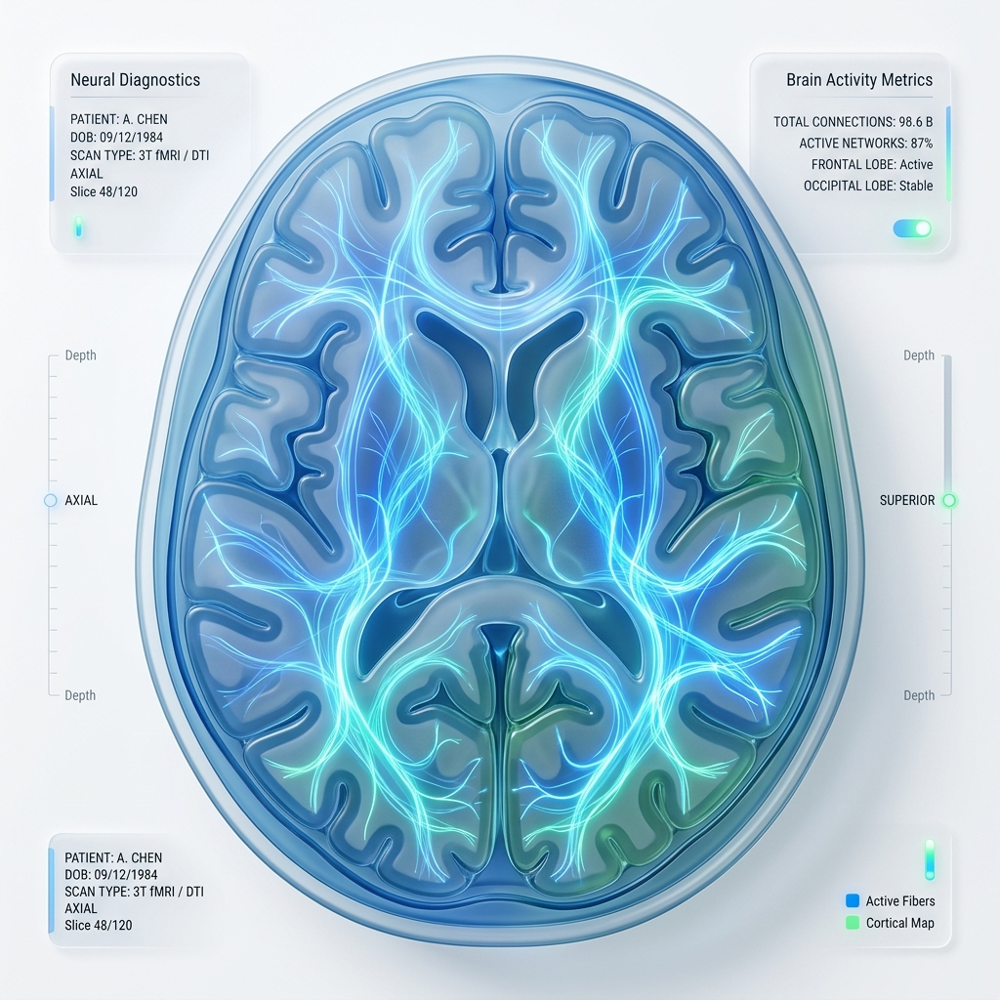
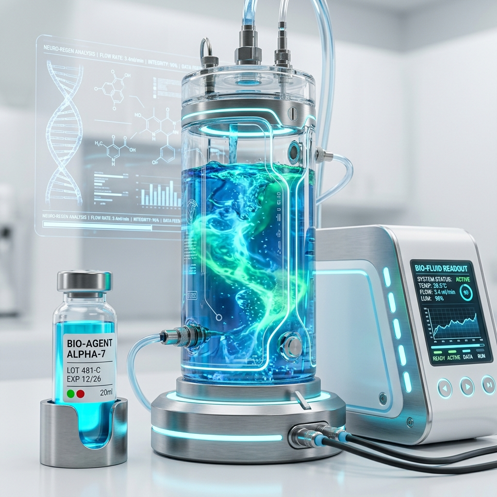

NERVOUS SYSTEM ANALYSIS
100% SCANNED
Select a Brain Lobe
Hover or tap on glowing nodes on the scan to view neurological details.

MS PROGRESSION RATE
Bubble Info
INTRACRANIAL PRESSURE
20 Hg
5 Hg
NEUROTROPHIN LEVELS

85% NMU
45% GHs
0%
AI ANALYZER
Click to Run AI Diagnostics
RECOMMENDED DOCTORS
-
Dr. Theresa WebbNEURORADIOLOGISTAvailable
-
Dr. Devon LaneRADIOLOGISTOn operation
-
Dr. Kathryn MurphyNEUROLOGYAvailable